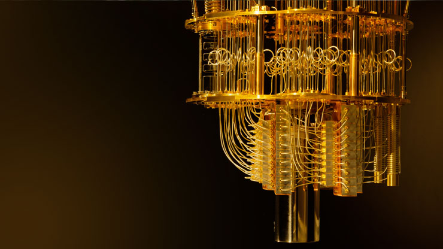

My name is Oluwafunbi Ogunlaja and I believe that I am the best candidate for this university as my passion for Engineering is deep-rooted.
My aspirations to become an engineer date as far back as Year 8, where in Design Technology we were given the task to build a bridge out of thin sticks of wood. We had to design it in such a way that it would be able to withstand an increasing stress, forcing us to reconsider the impact that internal structure can have on a product's properties. Stress analysis is instrumental towards creating functional structures such as buildings, bridges, and various other infrastructures.
Physics has always been a strong interest of mine as I am enthralled by how energy is the basis of life.
Through attending a series of 5 small lectures at the Emmanuel Centre, my eyes were opened to topics such as harmonics that I had not even covered at school. A particular talk that sparked my interest was one from LeahLoveScience who spoke about a fusion project in Oxford, which has the potential to change the world.
Through attaining a grade 9 in my Level 2 GCSE further mathematics qualification, I have discovered that I have a high aptitude for problem solving and methodical approaches to real life situations.

I was introduced by a cousin to Quantum Computing after I told him about my fascination regarding Quantum Physics. I was lucky enough to be granted a full scholarship for IBM's Quantum Computing Course where over the course of 6 months I learned Qiskit (a new programming language) and simulated programming a Quantum Computer.
The course not only allowed me to get a feel for coding, but it also integrated Physics into computing, which I found incredibly fascinating as I got to truly understand a real-life application of Quantum Mechanics, a topic that really excites me.
I learned about Quantum Key Distribution and therefore understood the importance of encryption and decryption, but the most intriguing part of this common concept was the fact that you could detect inteception of messages by measuring the state of a qubit.
I became more interested in computing and therefore turned to learning various different programming languages such as Python and JavaScript.